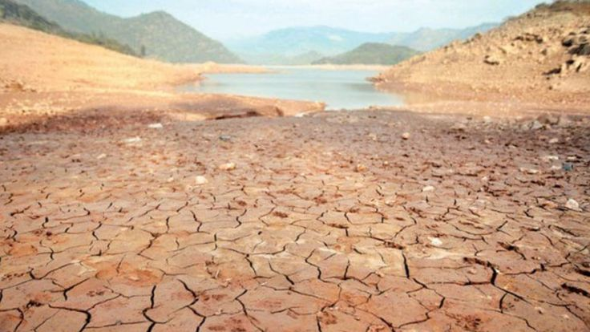

Use less unnecessary water
Avoid leaving taps running when water is not being used and choose efficient ways to complete everyday tasks.
Water is part of everything we do. Small changes to everyday habits can reduce waste, protect available supplies and help households prepare for times when water is limited.

Water conservation means using water efficiently, avoiding unnecessary waste and protecting the available supply for essential needs.
It does not mean drinking less water or neglecting personal hygiene. Instead, conservation focuses on unnecessary water use, preventable leaks and inefficient practices.
Water is used in homes, schools, agriculture, businesses and public services. When water is wasted, a portion of the available supply is used without providing a useful benefit. Managing this resource carefully is particularly important in areas where rainfall is seasonal or access to reliable water supplies is limited.
Avoid leaving taps running when water is not being used and choose efficient ways to complete everyday tasks.
Check plumbing, taps and storage containers regularly. Repairing leaks prevents water from being lost before it can be used.
Keep drinking water clean and safely stored. Water conservation should never come at the expense of health or sanitation.
Water waste does not always involve a major problem. Sometimes it comes from habits that happen every day. In other cases, it is caused by damaged equipment that goes unnoticed.

Water continues flowing when a tap is left open during brushing, washing or cleaning. Turning it off when it is not needed can reduce unnecessary use.
Damaged taps, leaking connections and overflowing storage tanks can cause avoidable water loss. Regular inspections help people notice problems early.
Washing small laundry loads too frequently or using a continuously running hose for cleaning can increase water use. Using suitable containers or efficient machine settings may help.
Watering plants more often than they need can waste water and affect plant health. Soil condition, plant type and weather should guide watering decisions.
Different locations use water in different ways. Select a category to find practical conservation methods for that setting.
Bathroom activities often involve running water. Adjusting a few habits can help reduce waste while maintaining hygiene.
Close the tap while brushing your teeth or applying soap. Open it again when water is needed.
Avoid leaving the shower running longer than necessary, while still washing thoroughly.
A dripping tap or leaking toilet should be checked and repaired by someone qualified.
Water conservation should never reduce essential hygiene or safe drinking-water use.
This guide provides general educational advice. The most suitable method depends on local water access, equipment and safety requirements.
Water reuse can help reduce demand for drinking-quality water, but not every source of water is suitable for every purpose.
For example, safely collected rainwater may be suitable for certain outdoor tasks that do not involve drinking, food preparation or personal hygiene. The intended use and possible contamination must always be considered.
Where permitted and safely managed, rainwater may be used for watering ornamental plants or some outdoor cleaning.
Collection containers should be properly maintained and protected from dirt, animals and mosquito breeding. Non-drinking water must be kept separate from safe water supplies.
Rainwater and previously used water can contain harmful germs or chemicals, even when they look clean. Safe treatment and testing may be necessary.

Conservation is not limited to personal habits. Schools can reduce waste through better maintenance, clearer reporting procedures and responsible management of shared water facilities.
School staff can inspect taps, toilets, sinks, storage tanks and exposed pipes for signs of leakage. Damaged equipment should be repaired by an appropriately qualified person.
Students and teachers should know whom to inform when they notice an overflowing tank, dripping tap or damaged pipe. Clear reporting can prevent small issues from continuing.
Schools can promote appropriate tap use, ensure water storage is hygienic and review cleaning methods that may use more water than necessary.
Students can help identify problems, but plumbing repairs and work involving water systems should be handled by responsible adults or qualified personnel.
Reducing water waste is one part of responsible water management. Learning how to protect essential water supplies before shortages occur is just as important.
LEARN ABOUT DROUGHT PREPAREDNESS